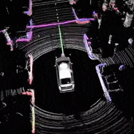

LIDAR-Based-3D-Object-Detection
Computer Vision
Implemented a 3D object detection system with LIDAR/Fused data as input
View ProjectProfessional Profile - All About Me
I am an experienced Machine Learning Engineer with a focus on the areas of Computer Vision and Natural Language Processing. I am currently furthering my education by pursuing an MS in Artificial Intelligence at Northeastern University, Boston.
My professional background includes working in AI teams at companies such as Mercedes Benz R&D, CDW Corporation, and Wipro Limited, where I have gained expertise in building training and inference pipelines for Lane and Object Detection, Segmentation, Face Recognition, GANs, and more, and then deploying them on various types of computing platforms. I possess a strong understanding of various Deep Learning libraries and toolkits, including PyTorch, TensorFlow, Keras, and OpenCV, to solve problem statements involving Computer Vision, Natural Language Processing, and Reinforcement Learning. My areas of emphasis include Neural Network Learning and Inference Optimization, End-to-End Edge Computing, Autonomous Driving Perception, Self Supervision and Sequence Modeling.
In addition to my technical abilities, I am also a passionate photographer, video editor, and graphic designer. I am also deeply interested in technology and enjoy staying current with the latest advancements in the field.
I am a friendly and approachable person, and I welcome the opportunity to connect with others. Please do not hesitate to reach out to me.
See My Work - Projects
Implemented a 3D object detection system with LIDAR/Fused data as input
View ProjectImplemented an image to image generation network that converts map images to satellite images.
View ProjectImplemented an auto white balancing network using a UNET.
View Project
To use transformers to translate from one language to another. Simple implementation.
View ProjectEstablished a calibrated and uncalibrated stereo setups using OpenCV. Utilizing PyTorch and OpenCV, Applications such as Depth Map Estimation, 3D Video, 3D Point Cloud, 3D Reconstruction, Object Detection and Obstacle Avoidance were then built around the setup.
View Project
Devised a framework to determine whether a web page is relevant to a user's profession. Utilized TensorFlow, Spacy, NLTK, Selenium, Sci-kit Learn, NumPy to scrape a user's webpage and compare it to user's portfolio.
View Project
Using SOLID design principles and MVC architecture, I have built a game.
View Project
Quantized resnet-18 to run with int8 precision instead of float32. This helps in faster inference with negligible drop in accuracy. Networks are expected to be 3X to 4X improvements in speed and memory compression.
View ProjectEstimates face attributes such as beard, spectacles, mustache and more. Based on CelebA Dataset.
View Project
Simple sentiment classification using PyTorch on IMDB Dataset.
View Project
Generating character wise text generation - Deep Learning Specialization - Sequence Models.
View Project
Established a calibrated and uncalibrated stereo setups using OpenCV. Utilizing PyTorch and OpenCV, Applications such as Depth Map Estimation, 3D Video, 3D Point Cloud, 3D Reconstruction, Object Detection and Obstacle Avoidance were then built around the setup
Devised a framework to determine whether a web page is relevant to a user's profession. Utilized TensorFlow, Spacy, NLTK, Selenium, Sci-kit Learn, NumPy to scrape a user's webpage and compare it to user's portfolio
The tasks involved were calibrating the camera using OpenCV and chessboard inputs. The program estimates the rotation and translation parameters ( extrinsic parameters) at run time using the calibrated intrinsic parameters.


20 South Huntington Ave
Boston MA, USA.
+1(857)376-8529
vasa.s@northeastern.edu santosh7vasa@outlook.com